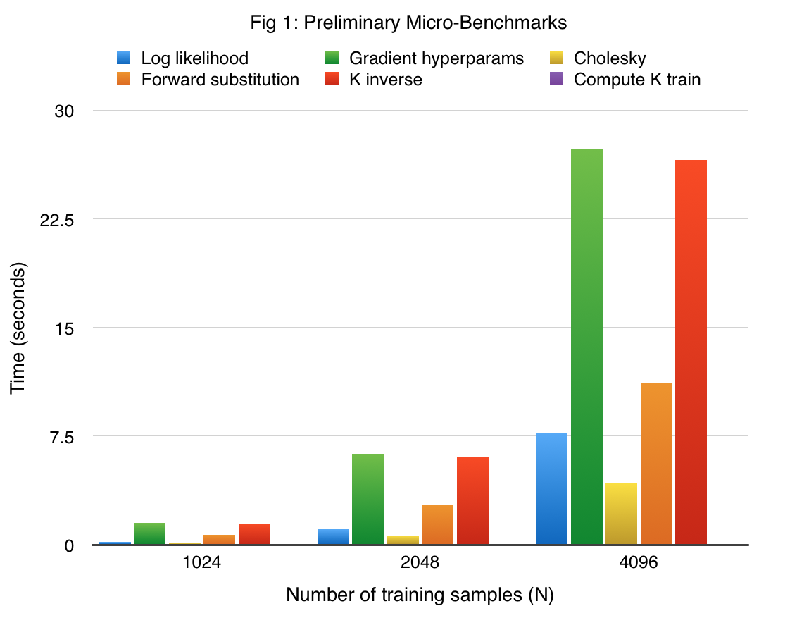
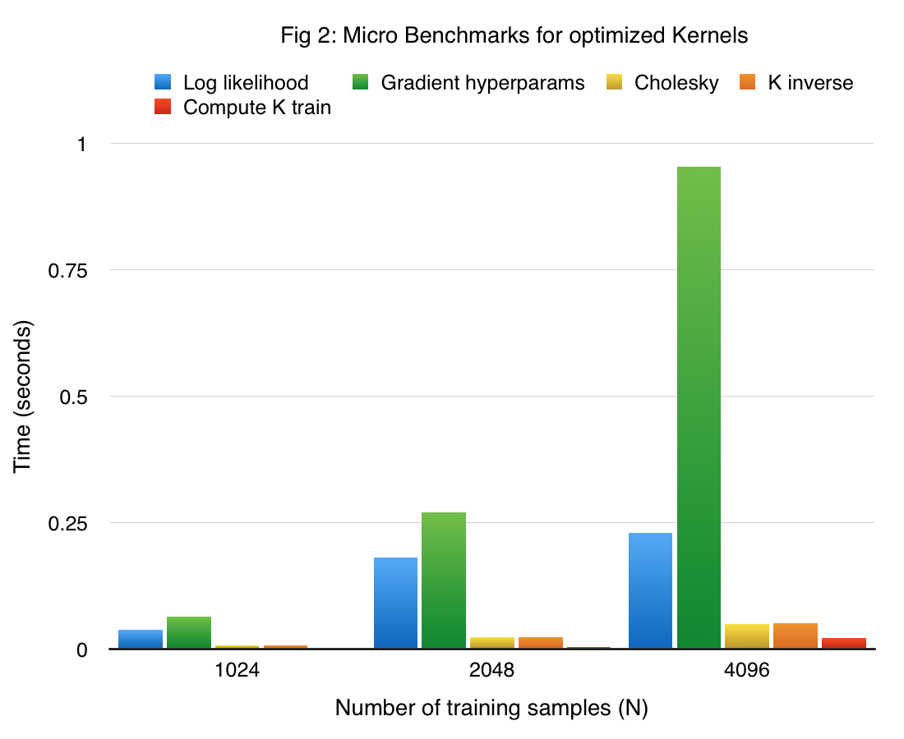
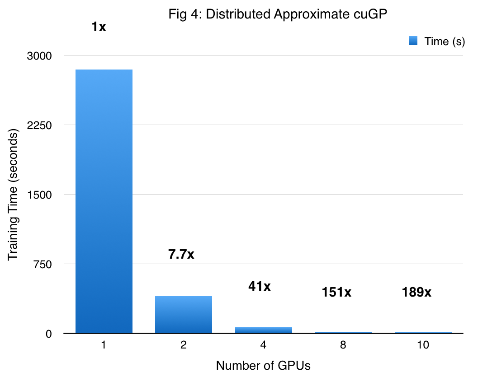
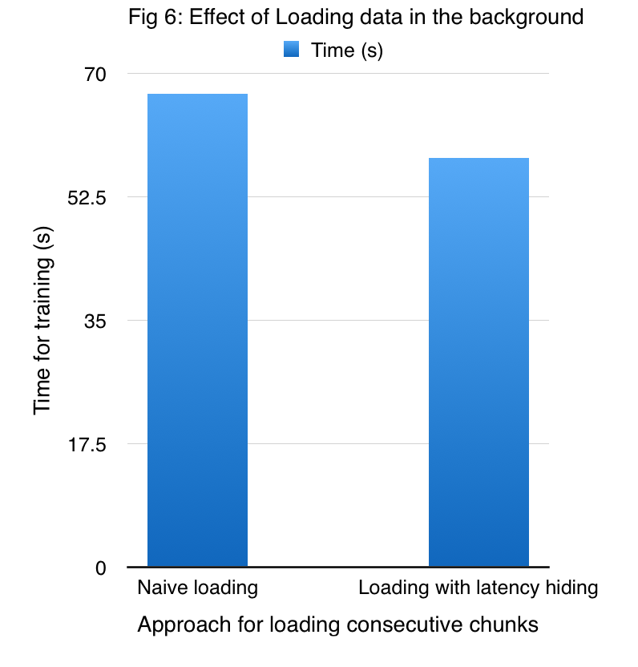
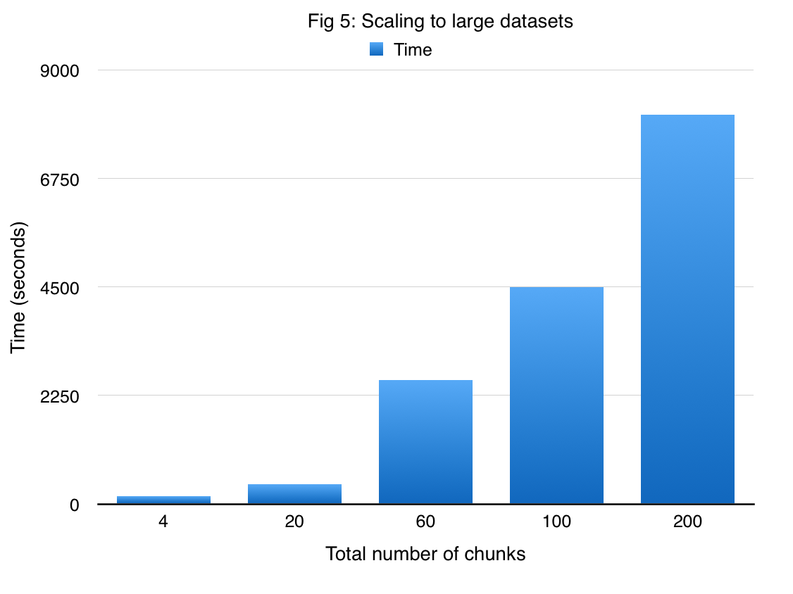
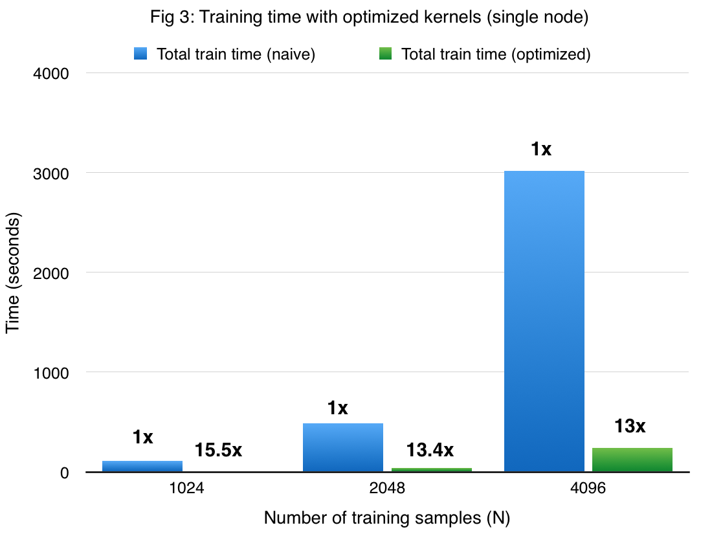
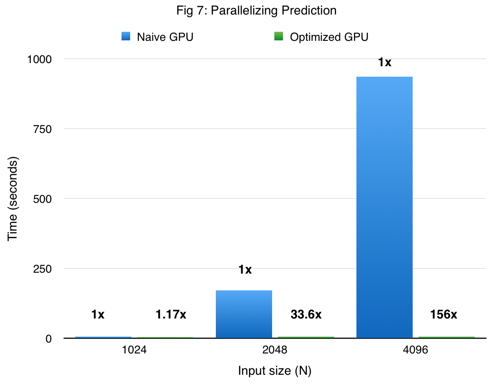

Summary
We have parallelized the training and prediction phases of Gaussian Process Regression on a GPU. We also took it a step further and implemented a Distributed Approximate version: DAcuGP. This version effectively parallelizes all computation across several GPUs in a cluster while also managing light-weight communication between the participating nodes. We were able to obtain significant speedups against strong baselines. Furthermore, to be able to handle arbitrary sized data sets, we extended the approach by adding a decentralized computation-scheduler that appropriately dispatches work across nodes.
Background
Gaussian Process (GP) regression models have become very popular in recent years in the machine learning community. This can be attributed to the flexibility offered by these models to allow users to choose the appropriate covariance function to control the degree of smoothness. GP regression is basically a Bayesian nonparametric model (where an underlying finite-dimensional random variable is replaced by a stochastic process). Formally, a GP is a stochastic process where any finite number of random variables have a joint Gaussian distribution [RW06].
A GP is completely specified by a mean function ($m(\vec{x})$) and a covariance function ($\kappa (\vec{x}_1, \vec{x}_2)$), which for a real process $f(\vec{x})$ can be defined as:
$$ m(\vec{x}) = \mathbf{E}[f(\vec{x})] \ \kappa (\vec{x}_1, \vec{x}_2) = \mathbf{E}[(f(\vec{x}_1) - m(\vec{x}_1))( f(\vec{x}_2) - m(\vec{x}_2) )] $$
Generally, the mean function is taken as zero. In that case, the covariance function ($\kappa (\vec{x}_1, \vec{x}_2)$) basically turns into the covariance between $f(\vec{x}_1)$ and $f(\vec{x}_2)$. The squared exponential (SE) kernel is a common choice of covariance function (amongst a wide range of available choices for the kernel), and is defined as follows: $$ \kappa (\vec{x}_1, \vec{x}_2) = \exp( -\frac{1}{2l^2} | \vec{x}_1 - \vec{x}_2 |^2 ),$$ where, $l$ is the lengthscale parameter that needs to be estimated.
In order to perform nonparametric regression, a GP prior is placed over the unknown function. The posterior distribution obtained by multiplying the prior with the likelihood is again a GP. The predictive distribution for a new test point ( $ \vec{x}_{t} $ ), given the entire dataset ($n$ tuples of the form $(\vec{x}, y)$) can be shown to be a Gaussian with the following mean ( $ \hat{f_{t}} $ ) and variance ( $ \mathbf{V}[f_{t}] $ ): $$ \hat{f_{t}} = {\vec{k}_{t}}^{T} (K + \sigma_{n}^2I)^{-1} \vec{y} $$ $$ \mathbf{V}[f_{t}] = \kappa (\vec{x}_{t}, \vec{x}_{t}) - {\vec{k}_{t}}^{T} (K + \sigma_{n}^2I)^{-1} \vec{k}_{t} $$ where,
- $K$ is a $n \times n$ matrix where the $ij$th entry is computed as $K_{ij} = \kappa (\vec{x}_i, \vec{x}_j)$,
- $\vec{y}$ is a $n \times 1$ vector formed by stacking the $n$ target values together from the dataset,
- $I$ is a $n \times n$ identity matrix,
- $\sigma^2$ is the noise variance,
- $ \vec{k}_{t}$ is a $n \times 1$ vector where each entry is computed as $ \vec{k}_{t_{i}} = \kappa (\vec{x}_i, \vec{x}_{t})$
In order to learn the different parameters (lengthscale(s) of the covariance kernel, the noise and signal variances), a common technique is to use the marginal likelihood maximization framework (this step can be thought of as the 'training' phase). The log marginal likelihood has the following form:
$$ LML = \log p(\vec{y} | X) = -\frac{1}{2} \vec{y}^T (K + \sigma_{n}^2I)^{-1}\vec{y} - \frac{1}{2} \log |K + \sigma_{n}^2I | - \frac{n}{2} \log 2\pi $$
If we consider $\vec{\theta}$ as the vector of parameters to estimate, gradient based methods (conjugate gradient of L-BFGS) can be employed after obtaining suitable analytic gradients $ \frac{\partial LML}{ \partial \vec{\theta}_i}$.
The main bottlenecks for both training and prediction phases are the compute- and memory-intensive matrix computations, which take $\mathcal{O}(n^3)$ flops, thus limiting the application of GPs for large datasets having $ n > 10000$ samples.
Our main task in this project was to exploit the data parallelism available while handling all matrix computations. If time permits we would like to look at recent approximate approaches that might be more suitable for distributed GPU setting. [DN15, WN15]
Approach
- Serial implementation
In order to gain a better understanding of each of the operations involved in both learning (training) and inference (testing) phases, we implemented a serial single-threaded version of the GP regression algorithm. To accomplish this, we implemented our own mini matrix algebra library for all the required operations in GPR. This mini library has routines for Cholesky decomposition, forward substitution, backward substitution among other standard matrix-matrix/matrix-vector operations. For minimizing the NLML in the training phase, we employed the conjugate gradient solver by Joao Cunha. To be precise, this is the only third party code that we used in our serial implementation, all other routines were written from scratch in C++. Correctness was established by cross-checking outputs of each of the steps with the corresponding results as in the popular GPML framework which is written in Matlab.
- GPR on CUDA: First attempt
After acquainting ourselves with the nitty gritty details at each step, we implemented GP regression on CUDA writing our own kernels for each task. As in the previous case, we implemented the kernels for the required matrix computations ourselves. More precisely, we wrote a recursive blocked version of Cholesky decomposition as described in the paper by Dong et al [DH14]. One of the important steps in computing the likelihood as well as in computing the gradients, is solving a triangular system of equations. An efficient method for solving such a system is to employ forward/backward substitution algorithm. Since both the algorithms are inherently sequential, we implemented a recursive algorithm for efficiently finding the inverse of a lower(upper) triangular matrix as given in []. We also implemented a reasonably fast matrix-matrix multiplication kernel that uses shared memory. Moreover, implementing the kernels ourselves gave us the opportunity to fuse different operations together. We benchmark our implementation on a synthetic sine dataset, wherein the input data lives in a 10 dimensional space, and the function to approximate is a sine function that depends only on the first dimension. In order to make the targets (function obsrevations) noisy, we add a Gaussian noise to the function values (the variance of this Gaussian is 0.05). Figure 1 shows the performance of the most crucial functions (some of which are implemented with a series of kernels), on the synthetic dataset. Note that all our experiments were performed using the K40 GPUs.
We see that computation of the gradient of log hyperparameters takes the most amout of time. This is expected because the gradient compuatoin involves an inverse of a lower traingular matrix and generation of the covariance matrix, in addition to vector-vector dot products and matrix-vector dot products and vector-vector dot product. In addition to providing significant insights, this implementation serves as strong baseline for our actual approach.
- cuGP
For our final approach, we build on the version-1 of our CUDA implemenation. We replaced some of our kernels with routines from cuBLAS/cuSOLVER. More specifically, we employ the following routines from the cuBLAS library:
DGEMM for efficient matrix multiplication
DGEMV for matrix-vector product
DGER: for vector outer product
DTRSM: for solving the triangular system of equations.
For fast Cholesky decomposition, we employ cuSOLVER’s DPTORF routine. Additionally, we use THRUST library routines for vector dot products and parallel reduce. However, we retain our important kernels like the one reponisibel for computing the covariance matrix, another which performs efficient elementwise matrix muliplication, and so on.
Furthermore, we optimize our other kernels by ensuring low bank contention on memory access conflicts by reading from addresses dictated by the logical location of a thread in the CUDA grid.
The performance of the main components in our final single node GP implementation in CUDA of the training phase (referred to as cuGP) is given in figure 2. The results are obtained on the previously described sine dataset.
Log Likelihood Gradient of hyper params Cholesky K inverse K train 1024 4.63 23.95 16.4 192 1.7 2048 5.91 23.22 26.5 253 1.77 4096 33.4 28 84.8 511 1.42 - DA-cuGP: Distributed Approximate cuGP
The single node cuGP implementation performs well on datasets of the size O(10^4). Howerver, due to the O(N2) storage requirement, the GP implementation is limited by the amount of memory available on the device. To further scale , we have implemented a recent approach which is an approximation to the exact GP regreession. This was our stretch goal up till the checkpoint. We adapt the method to mulitple GPUs. The high level idea is of the approximate approach is to have several experts, each of whom is responsible for a subset of the original data. The approach basically approximates the originial covariance matrix to several blocks.
Thus the negative log marginal likelihood can be approximated by the sum of the log marginal likelihood values of each individual expert. The subtle point in the learning (training) phase is that the hyperparameters have to be shared across the products.
This approach is similar to the parameter-server approach as discussed in the class. So one node (a master node) is responsible for storing the current hyperparamters of the GP model. At each step of the log likelihood / gradient compuaation, each of the workers (experts in our context) need to get the latest value of the hyperparameters, and perform the required computation. The master then collects the partial results and updates the hyperparameters and broadcasts back the new parameters.
So we have implemented this approach using mulitple GPUs (which can be thought of as individual experts). In order to communicate the hyper-parameters, we use socke programming for efficiently transferrring the information to and from the GPUs. We call our implementation Distributed Approximate cuGP (DAcuGP).
The performance of the DAcuGP on the synthetic sine dataset in shown in Figure 4. The first bar corresponds the exact GP working on a dataset with 10000 points. As we move towards the right, the number of GPUs increase and the size of the dataset per GPU decreases. As one might expect, we obtain massive speedup due to both reduction of the problem size, and asymptotically lower complexity of the approximate method itself.
 - DAS-cuGP: Distributed Approximate Scalable cuGP
The size of data that can be handled by DA-cuGP is limited by the number of GPUs available. In order to further scale up, we wrote a decentralized scheduler which can handle arbitary sizes of data. The basic idea is the same, we shard the data into smaller subsets. And, we map each of the shards to the avalable GPUs in as similar way as is done in an ISPC gang.
To provide a high level intuition, let’s suppose that we have 8 shards and only 2 GPUs are available. FOr computitgh the log likelihood at a single step requires input from all the experts (from all the shards), so the first GPU is assigned to compute the ll for shards 1 3 5 7, and the second GPU computes ll for the remaninig shards in an iteratiove fasthion (it is imortant to note that only 1 shard will fit in a GPU at one point of time).
So essentially the data locality is not there at all. But the tradeoff is that we can manage greater volumes of data.
To hide the latency of reading a shard each time, we implemented a prefetcher, which is responsible for bringing the next chunk of data to the memory in host, at the time when the device is performing necessary computaion with the shard in the device memory. We call this the Distributed Approximate Scalable cuGP (DAScuGP) approach.
Figure 7 shows the improvement performance due to the preferethch on a dataset comprising of 24000 points which are divided inoto 16 shards, when employihng 4 GPUs.
In order to demonstrate that DAScuGP enables us to handle large amounts of data, we applied our method to the US Flight delay dataset. Given the amount of time for running a job in latedays cluster (3 hours), we subsampled the original data to obtain 1 million samples. There are 7 attributes which are used to predict the flight arrival delay time. We divide this dataset into 200 shards each having 5000 samples. Figure 8 shows the time required for DAS-cuGP while varying the number of shards. We find that it takes less than 3 hours to do the learning phase in DAS-cuGP.

Considering our earlier approach as a competitive baseline, the speedup obtained with our cuGP implementation for the traing phrase is gvien in table.
Figure 3 compares the performance of cuGP with the baseline in the testing phase. The x-axis shows only the number of training points, the number of traning points for each experiment was 1000. We see signifiant speedup values over the baseline for both training as well as testing phaes.
 References
[RW06]: Williams, Christopher KI, and Carl Edward Rasmussen. "Gaussian processes for machine learning." the MIT Press 2.3 (2006): 4.
[WN15]: Wilson, Andrew Gordon, and Hannes Nickisch. "Kernel interpolation for scalable structured Gaussian processes (KISS-GP)." arXiv preprint arXiv:1503.01057 (2015).
[DN15]: Deisenroth, Marc Peter, and Jun Wei Ng. "Distributed Gaussian Processes." arXiv preprint arXiv:1502.02843 (2015).
[DA14]: Dong, Tingxing, et al. "A fast batched Cholesky factorization on a GPU." Parallel Processing (ICPP), 2014 43rd International Conference on. IEEE (2014)